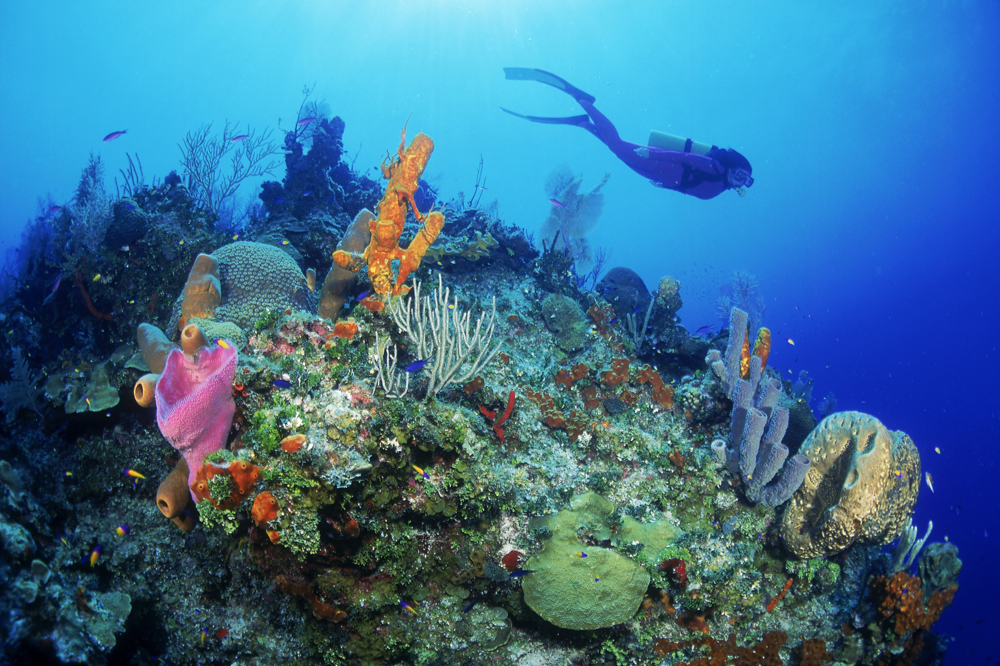
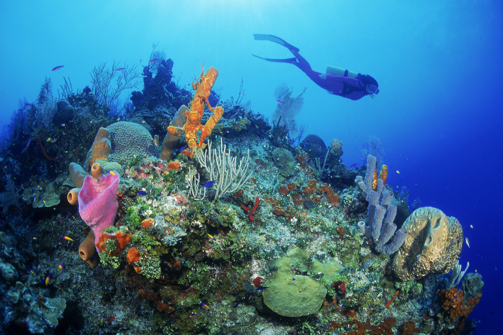

Marine life, sea life or ocean life is the collective ecological communities that encompass all aquatic animals, plants, algae, fungi, protists, single-celled microorganisms and associated viruses living in the saline water of marine habitats, either the sea water of marginal seas and oceans, or the brackish water of coastal wetlands, lagoons, estuaries and inland seas. As of 2023, more than 242,000 marine species have been documented, and perhaps two million marine species are yet to be documented. An average of 2,332 new species per year are being described. Marine life is studied scientifically in both marine biology and in biological oceanography. By volume, oceans provide about 90% of the living space on Earth, and served as the cradle of life and vital biotic sanctuaries throughout Earth's geological history.
 
